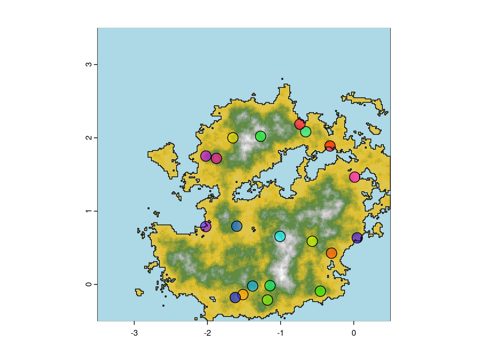

3 Population structure & growth
3.1 Settlements position
n <- 20 # we will create 20 sites
size <- rexp(n) #assign a size for each site following an exponential distribution Following what we set up during the previous chapter, we can use spatSample from package terra to randomly select n points (20 for this simulation) on the viable polygon we created.
sites <- spatSample(viable, n) # generate n random points within the viable polygon and assign to variable sites
plot(height.ras, col=col_ramp(20), legend=F, reset=F)
plot(height.wat, col="lightblue", add=T, legend=F)
plot(sites, cex=2, pch=21, add=T, bg=rainbow(length(sites), alpha=.6))
# get only the non submerged actual land and plot it
above_level <- height.ras > mean(height.ras[])
coastline <- st_as_sf(as.polygons(above_level))[2,]
plot(coastline, col=NA, bgc=adjustcolor("cyan", 0.1), add=T)
In the context of the archaeoriddle challenge, the files that describe this newly generated environment (the DEM and the coastline) as well as the resources raster, needs to be given to the participant. This can be done as:
foldname="data_toshare" #We will store all data that can/will be shared with participant in data_toshare
if(!file.exists(foldname))dir.create(foldname)
st_write(dsn=file.path(foldname,"coastline.shp"), coastline,append=F) # Write the coastline as a shapefile
## Writing layer `coastline' to data source
## `data_toshare/coastline.shp' using driver `ESRI Shapefile'
## Writing 1 features with 1 fields and geometry type Multi Polygon.
writeRaster(filename=file.path(foldname,"dem_raster.tiff"), height.ras, overwrite=T) #write the DEM as a raster
writeRaster(filename=file.path(foldname,"resources.tiff"), ress, overwrite=T) #write the resources as a rasterThe original data, saved and shared for the archaeoriddle are stored in data_original/
3.2 Initializing Site Population and Culture
Each site is then assigned as either belonging to the hunter-gather (HG) or farmer (F) culture.
To generate a more realistic distribution, all sites are initially, designated as hunter-gatherer sites, except for the one located in the most southwest position. Please note that this decision was based on the specific shape of the initial archaeoriddle’s challenge. If needed, you may want to manually select the site culture for this specific location.
cultures <- rep("HG",length(sites))
sw <- which.min(sqrt((crds(sites)[,"x"] - min(crds(sites)[,"x"]))^2 + (crds(sites)[,"y"] - min(crds(sites)[,"y"]))^2))
cultures[sw]="F"
sites$culture <- cultures
plotMap(height.ras,height.wat)
points(crds(sites),bg=as.factor(cultures),pch=21,cex=1.3)
Each site will then be assigned a carrying capacity (how many people can leave on the site), probabilistically defined using the resource raster and the culture of the site.
Kbase <- c("HG"=45,"F"=120) #difference in base-K for the two cultures
# The base Ks are then modulated given the ressource raster
sites$Ks <- initKs(Kbase, sites, ress, sizeexp="F")Using these carrying capacities, we then set initial number of people, and the population structure for each sites:
# Population size at initialisation, a number close to Ks
INs <- round(runif(length(sites), 0.85, 0.95)*sites$Ks)
# initialise population structure for all sites
Ips <- lapply(INs, initpopstruc)
ts <- 250
# We put the population structure across the years in a matrix: each row will represent a time step of the simulation ; each column a sites
Nts <- initlistsites(Ips, ts=ts)We can look at the population structure of the biggest site:
biggest <- which.max(INs)
pop.biggest <- Ips[[biggest]]
poplist=sapply(c(F="F",M="M"),function(s)table(cut(pop.biggest[pop.biggest[,2]==s,1],breaks=seq(0,40,4))))
par(mar=c(1,10,1,1))
barplot(-poplist[,1],beside=T,horiz=T,col=c("blue"),axes=F,las=1)
par(mar=c(1,1,1,10))
barplot(unname(poplist[,1]),beside=T,horiz=T,col=c("red"),axes=F)

initKs, initpopstruct and initlistsites functions here:
Show code
Code
## Function 14. Initial carrying capacity
initKs <- function(Kbase=c("HG"=30,"F"=120), sites, ressources,
sizeexp=NULL, rate=.5){
Ks <- round(Kbase[sites$culture] + rnorm(length(sites), 0, 10))
while(any(Ks<1)){
Ks <- round( Kbase[sites$culture] + rnorm(length(sites), 0, 10) )
}
#Ks[sites$culture=="F"]=Ks[sites$culture=="F"]*runif(sum(sites$culture=="F"),1,1)
tmp <- Ks * (1 + extract(ressources, sites)[, 2])
if(!is.null(sizeexp)){
tmp[sites$culture==sizeexp] <- (
(Ks[sites$culture==sizeexp]) *
(1 + rexp(sum(sites$culture==sizeexp), rate=rate) * extract(ressources, sites[sites$culture==sizeexp])[,2])
)
}
tmp
}
## Function 15. Create population matrix
initpopstruc <- function(n=100, ages=10:30, p_sex=c(0.5, 0.5)){
initpop = data.frame(
"Age" = sample(ages, n, ages, replace = TRUE),
"Sex" = sample(c("M", "F"), n, prob = p_sex, replace = TRUE))
return(initpop)
}
## Function 16. Initialize initial list of sites
initlistsites <- function(list_sites, ts=200){
Nts <- matrix(0, nrow=ts+1, ncol=length(list_sites))
Nts[1,] <- sapply(list_sites, nrow)
return(Nts)
}3.3 Population Growth : \(Pop\)-protocol
This is a central aspect of the model, and defines several parameters to control how population growth and reach a maximum population \(\sim K\). It is based on three functions: The first function, Gpd(), is the core of the protocol. It receives a population matrix or data.frame with a specific number of individuals (nrow), their age (df[,1]) and their sex (df[,2]) and produces another object with the same format but with a different population based on the current one. Introduced in a loop, this function produces a time series of population, which ensures the Markov property of the stochastic process \(p(x_n+1|x_n)\).
However, this function also relies on two the other functions: death() and K_lim(). death() is the process of people dying each year. It is based on an age-structured probability matrix, where infants and old people have more probabilities of deceasing. The matrix is provided, but the user can set its own. K_lim() limits the population when it reaches \(K\). The user should specify the appropriate value for \(K\) according to the size of the site, its type, the group economy, etc. Also, the user can change the probability that exceeding people dies with parameter prob. Default is 0.8.
These base function will then be used in higher level functions to update the population size given the size and ages defined and described in the previous section.
A simple function Pop_stoch implement a simple stochastic growth that uses these functions without the migrations and war mechanismes describe in this chapter.
We can then use it to check and see the type of growth are generate given the default parameters (prob define the probability of people dying when the population has reached carrying capacity)
set.seed(1234)
plot(1,1,ylim=c(0,180),xlim=c(0,50),type="n",xlab="time",ylab="pop size")
na=replicate(10, lines(Pop_stoch(pop_size=50, ts=50, K=150, W_fert_age = c(10, 45), M_fert_age = c(15, 55), p_offspring = 0.3, prob = 0.8)))To know more about these functions and how their parameters are used, you can look at the manual given in the package:
You can also use this shiny app online to explore how these parameters interact to generate different growth curves.
Source
If you want to delve into the code of the functions you can open it here:
Show code
Code
## Function 1. Generation of population dynamics
Gpd <- function(x, K, W_fert_age = c(10, 45), M_fert_age = c(15, 55),
p_offspring = 0.3, prob = 0.8, ...){
## Process of having offspring
# Female fertile population
W <- x[x[,2]=="F", ]
W_fert <- W[W$Age > W_fert_age[1] & W$Age < W_fert_age[2], ]
# Male fertile population
M <- x[x[,2]=="M", ]
M_fert <- M[M$Age > M_fert_age[1] & M$Age < M_fert_age[2], ]
## Probability of having descendance per woman
# Penalisation in case there are too few men
pen <- round(nrow(M_fert)*2 / nrow(W_fert), 2) # Assumes one man can have two women
pen[pen>1] <- 1 ## The men penalisation can never multiply the birth rate per woman
# Probability of a woman having a son per year
p_offspring <- p_offspring*pen
## Aging process. They get one year older
x$Age <- x$Age+1
## Births are new population that's added
n_offspring <- sum(rbinom(nrow(W_fert), 1, p_offspring))
new_pop <- data.frame(
"Age" = rep(0, n_offspring),
"Sex" = sample(c("M","F"), n_offspring, prob=c(0.5, 0.5), replace=TRUE))
x <- rbind(x, new_pop)
## Process of dying
vec_d <- apply(x, 1, death, ...)
x <- x[vec_d==0, ]
## Apply carrying capacty restrictions
x <- K_lim(x, K = K, prob = prob)
return(x)
}
## Function 2. Simulation of death process
death <- function(x, pd=data.frame("Age" = c(0:99),
"P_d" = c(rep(0.14,1),
rep(0.16,4),
rep(0.05,5),
rep(0.01,24),
rep(0.03,14),
rep(0.1,10),
rep(0.3,42)))){
age <- as.numeric(x[1])
return(rbinom(1, 1, prob=pd[pd$Age==age, 2]))
}
## Function 3. Simulation of carrying capacity limitation
K_lim <- function(x, K, prob=0.8){
p <- nrow(x)
if (p>K){
o <- rbinom(p-K, 1, prob)
o <- sum(o[o==1])
o[o==0] <- 1 # Avoids problem eliminating all the df if remove == 0
x <- x[-sample(1:nrow(x), o, replace=FALSE), ]
}
return(x)
}
## Function 4. Stochastic population generation
Pop_stoch <- function(pop_size, K, ts, prob = 0.8, ...){
## Create initial population
pop_matrix <- data.frame(
"Age" = sample(10:30, pop_size, 10:30, replace = TRUE),
"Sex" = sample(c("M","F"), pop_size, prob = c(0.5,0.5), replace = TRUE)
)
## Initialize vector with population size for each year
pop <- vector(length=ts)
pop[0] <- nrow(pop_matrix)
## Run stochastic process
for (i in 1:ts){
pop_matrix <- Gpd(pop_matrix, K=K, prob=prob, ...)
pop[i] <- nrow(pop_matrix)
}
return(pop)
}